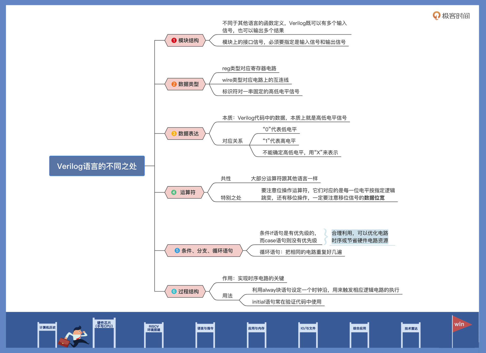

- 00 开篇词 练好基本功，优秀工程师成长第一步.md
- 01 CISC & RISC：从何而来，何至于此.md
- 02 RISC特性与发展：RISC-V凭什么成为“半导体行业的Linux”？.md
- 03 硬件语言筑基（一）：从硬件语言开启手写CPU之旅.md
- 04 硬件语言筑基（二）_ 代码是怎么生成具体电路的？.md
- 05 指令架构：RISC-V在CPU设计上到底有哪些优势？.md
- 06 手写CPU（一）：迷你CPU架构设计与取指令实现.md
- 07 手写CPU（二）：如何实现指令译码模块？.md
- 08 手写CPU（三）：如何实现指令执行模块？.md
- 09 手写CPU（四）：如何实现CPU流水线的访存阶段？.md
- 10 手写CPU（五）：CPU流水线的写回模块如何实现？.md
- 11 手写CPU（六）：如何让我们的CPU跑起来？.md
- 12 QEMU：支持RISC-V的QEMU如何构建？.md
- 13 小试牛刀：跑通RISC-V平台的Hello World程序.md
- 14 走进C语言：高级语言怎样抽象执行逻辑？.md
- 15 C与汇编：揭秘C语言编译器的“搬砖”日常.md
- 16 RISC-V指令精讲（一）：算术指令实现与调试.md
- 17 RISC-V指令精讲（二）：算术指令实现与调试.md
- 18 RISC-V指令精讲（三）：跳转指令实现与调试.md
- 19 RISC-V指令精讲（四）：跳转指令实现与调试.md
- 20 RISC-V指令精讲（五）：原子指令实现与调试.md
- 21 RISC-V指令精讲（六）：加载指令实现与调试.md
- 22 RISC-V指令精讲（七）：访存指令实现与调试.md
- 23 内存地址空间：程序中地址的三种产生方式.md
- 24 虚实结合：虚拟内存和物理内存.md
- 25 堆&栈：堆与栈的区别和应用.md
- 26 延迟分配：提高内存利用率的三种机制.md
- 27 应用内存管理：Linux的应用与内存管理.md
- 28 进程调度：应用为什么能并行执行？.md
- 29 应用间通信（一）：详解Linux进程IPC.md
- 30 应用间通信（二）：详解Linux进程IPC.md
- 31 外设通信：IO Cache与IO调度.md
- 32 IO管理：Linux如何管理多个外设？.md
- 33 lotop与lostat命令：聊聊命令背后的故事与工作原理.md
- 34 文件仓库：初识文件与文件系统.md
- 35 Linux文件系统（一）：Linux如何存放文件？.md
- 36 Linux文件系统（二）：Linux如何存放文件？.md
- 37 浏览器原理（一）：浏览器为什么要用多进程模型？.md
- 38 浏览器原理（二）：浏览器进程通信与网络渲染详解.md
- 39 源码解读：V8 执行 JS 代码的全过程.md
- 40 内功心法（一）：内核和后端通用的设计思想有哪些？.md
- 41 内功心法（二）：内核和后端通用的设计思想有哪些？.md
- 42 性能调优：性能调优工具eBPF和调优方法.md
- 先睹为快：迷你CPU项目效果演示.md
- 加餐01 云计算基础：自己动手搭建一款IAAS虚拟化平台.md
- 加餐02 学习攻略（一）：大数据&云计算，究竟怎么学？.md
- 加餐03 学习攻略（二）：大数据&云计算，究竟怎么学？.md
- 加餐04 谈谈容器云与和CaaS平台.md
- 加餐05 分布式微服务与智能SaaS.md
- 国庆策划01 知识挑战赛：检验一下学习成果吧！.md
- 国庆策划02 来自课代表的学习锦囊.md
- 国庆策划03 揭秘代码优化操作和栈保护机制.md
- 温故知新 思考题参考答案（一）.md
- 用户故事 我是怎样学习Verilog的？.md
- 结束语 心若有所向往，何惧道阻且长.md
03 硬件语言筑基（一）：从硬件语言开启手写CPU之旅
你好，我是LMOS。
我们都知道，自己国家的芯片行业被美国“吊打”这件事了吧？尤其是像高端CPU这样的芯片。看到相关的报道，真有一种恨铁不成钢的感觉。你是否也有过想亲自动手设计一个CPU的冲动呢？
万丈高楼从地起，欲盖高楼先打地基，芯片是万世之基，这是所有软件基础的开始，这个模块我会带你一起设计一个迷你RISC-V处理器（为了简单起见，我选择了最火热的RISCV芯片）。哪怕未来你不从事芯片设计工作，了解芯片的工作机制，也对写出优秀的应用软件非常重要。
这个处理器大致是什么样子呢？我们将使用Verilog硬件描述语言，基于RV32I指令集，设计一个32位五级流水线的处理器核。该处理器核包括指令提取单元、指令译码单元、整型执行单元、访问存储器和写回结果等单元模块，支持运行大多数RV32I的基础指令。最后，我们还会编写一些简单汇编代码，放在设计出来的处理器上运行。
我会通过两节课的篇幅，带你快速入门Verilog，为后续设计迷你CPU做好准备。这节课我们先来学习硬件描述语言基础，芯片内部的数字电路设计正是由硬件语言完成的。
一个芯片的内部电路是怎么样的？
作为开发，你日常最常用的编程语言是什么？也许是C语言、Java、Go、PHP……这些高级编译语言吧。而硬件设计领域里，也有专门的硬件描述语言。为什么会出现专门的硬件描述语言呢？这还要先从芯片的内部结构说起。
一般情况下，你所接触到的处理器芯片，已经不是传统意义上的CPU了，比如在业界很有名的国产手机芯片华为麒麟990芯片。我把麒麟990的功能模块图贴在了后面，对照图片会更直观。这样一款芯片，包含了CPU核、高速缓存、NPU、GPU、DDR、PMU等模块。

而在芯片设计时，根据不同模块的功能特点，通常把它们分为数字电路模块和模拟电路模块。
模拟电路还是像早期的半导体电路那样，处理的是连续变化的模拟信号，所以只能用传统的电路设计方法。而数字电路处理的是已经量化的数字信号，往往用来实现特定的逻辑功能，更容易被抽象化，所以就产生了专门用于设计数字电路的硬件描述语言。
硬件描述语言从发明到现在，已经有20多年历史。硬件描述语言可以让你更直观地去理解数字电路的逻辑关系，从而更方便地去设计数字电路。
现在业界的 IEEE标准主要有VHDL和Verilog HDL 这两种硬件描述语言。在高层次数字系统设计领域，大部分公司都采用 Verilog HDL完成设计，我们后面的实现也会用到Verilog。
千里之行，始于足下。在Verilog学习之前，我们需要先完成思路转换，也就是帮你解决这个问题：写软件代码和写硬件代码的最大区别是什么？搞明白了这个问题，你才能更好地领会Verilog语言的设计思想。
Verilog代码和C语言、Java等这些计算机编程语言有本质的不同，在可综合（这里的“可综合”和代码“编译”的意思差不多）的Verilog代码里，基本所有写出来的东西都对应着实际的电路。
所以，我们用Verilog的时候，必须理解每条语句实质上对应着什么电路，并且要从电路的角度来思考它为何要这样设计。而高级编程语言通常只要功能实现就行。
我再举几个例子来说明：声明变量的时候，如果指定是一个reg，那么这个变量就有寄存数值的功能，可以综合出来一个实际的寄存器；如果指定是一段wire，那么它就只能传递数据，只是表示一条线。在Verilog里写一个判断语句，可能就对应了一个MUX（数据选择器），写一个for可能就是把一段电路重复好几遍。
最能体现电路设计思想的就是always块了，它可以指定某一个信号在某个值或某个跳变的时候，执行块里的代码。通过使用Verilog语言，我们就能完成芯片的数字电路设计工作了。没错，芯片前端设计工程师写Verilog代码的目的，就是把一份电路用代码的形式表示出来，然后由计算机把代码转换为所对应的逻辑电路。
芯片如何设计？
说到这里你可能还有疑惑，听起来芯片设计也没那么复杂啊？其实这事儿说起来简单，但实践起来却相当复杂。接下来，我就说说，一个工业级的芯片在设计阶段大致会怎么规划。
在开始一个大的芯片设计时，往往需要先从整个芯片系统做好规划，在写具体的Verilog代码之前，把系统划分成几个大的基本的功能模块。之后，每个功能模块再按一定的规则，划分出下一个层次的基本单元。
这和Verilog语言的module模块化设计思想是一致的，上一层模块对下一层子模块进行例化，就像其他编程语言的函数调用一样。根据包含的子功能模块一直例化下去，最终就能形成hierarchy结构。
这种自顶向下的设计方法，可以用后面的树状结构图来表示：
从上图我们也可以看出，Verilog都是基于模块进行编写的，一个模块实现一个基本功能，大部分的Verilog逻辑语句都放在模块内部。
从一段代码入门Verilog
说完语言思路和硬件的模块化设计，接下来，我带你学习一下Verilog的基本模块和逻辑语句是怎么写的。
很多Verilog初学者刚开始都是从一些基础知识慢慢去看，比如基本语法、数据类型、赋值语句、条件语句……总想着把Verilog的全部基础知识看完了，再开始动手写代码。
但是你有没有想过，这些详细的基础知识，一两天自然是看不完的。而当你坚持了一段时间把它看完，以为可以上手写代码的时候，又会发现前面的基本语句全都忘了。这样的学习方法并不可取，效果也不好，所以我换个方法带你入门。我们先不去罗列各种详细的基础知识，而是从学习一段代码开始。
我会以一个4位十进制计数器模块为例，让你对Verilog模块代码有更直观的认识，然后根据这段代码模块，给你讲讲Verilog语言基础。这里先把完整代码列出来，后面再详细拆解。
module counter(
//端口定义
input reset_n, //复位端，低有效
input clk, //输入时钟
output [3:0] cnt, //计数输出
output cout //溢出位
);
reg [3:0] cnt_r ; //计数器寄存器
[email protected](posedge clk or negedge reset_n) begin
if(!reset_n) begin //复位时，计时归0
cnt_r <= 4'b0000 ;
end
else if (cnt_r==4'd9) begin //计时10个cycle时，计时归0
cnt_r <=4'b0000;
end
else begin
cnt_r <= cnt_r + 1'b1 ; //计时加1
end
end
assign cout = (cnt_r==4'd9) ; //输出周期位
assign cnt = cnt_r ; //输出实时计时器
endmodule
看了这段代码，也许你云里雾里，或者之前没接触过硬件语言，心里有点打鼓。不过别担心，入门硬件语言并不难，我们按照代码顺序依次来看。
模块结构
首先，让我们看一看这段代码的第一行和最后一行。没错，一个模块的定义是以关键字module开始，以endmodule结束。module关键字后面跟的counter就是这个模块的名称。
看着有没有熟悉的感觉？你可能觉得，这个看着跟其他编程语言的函数定义也没多大区别吧？别急着下结论，再仔细看看接口部分，发现没有？这就和函数传入的参数很不一样了。
module counter(- //接口部分- input reset_n,- input clk,- output [3:0] cnt,- output cout- );- …… //逻辑功能部分- endmodule
Verilog模块的接口必须要指定它是输入信号还是输出信号。
输入信号用关键字input来声明，比如上面第4行代码的 input clk；输出信号用关键字output来声明，比如代码第5行的output [3:0] cnt；还有一种既可以输入，又可以输出的特殊端口信号，这种双向信号，我们用关键字inout来声明。
数据类型
前面我提到过，在可综合的Verilog代码里，基本所有写出来的东西都会对应实际的某个电路。而Verilog代码中定义的数据类型就能充分体现这一点。
parameter SIZE = 2’b01;- reg [3:0] cnt_r;- wire [1:0] cout_w;
比如上面代码的第9行，表示定义了位宽为4 bit 的寄存器reg类型信号，信号名称为cnt_r。
寄存器reg类型表示抽象数据存储单元，它对应的就是一种寄存器电路。reg默认初始值为X（不确定值），换句话说就是，reg电路在上电之后，输出高电平还是低电平是不确定的，一般是在系统复位信号有效时，给它赋一个确定值。比如例子中的cnt_r，在复位信号reset_n等于低电平时，就会给cnt_r赋“0”值。
reg类型只能在always和inital语句中被赋值，如果描述语句是时序逻辑，即always语句中带有时钟信号，寄存器变量对应为触发器电路。比如上述定义的cnt_r，就是在带clk时钟信号的always块中被赋值，所以它对应的是触发器电路；如果描述语句是组合逻辑，即always语句不带有时钟信号，寄存器变量对应为锁存器电路。
我们常说的电子电路，也叫电子线路，所以电路中的互连线是必不可少的。Verilog代码用线网wire类型表示结构实体（例如各种逻辑门）之间的物理连线。wire类型不能存储数值，它的值是由驱动它的元件所决定的。驱动线网类型变量的有逻辑门、连续赋值语句、assign等。如果没有驱动元件连接到线网上，线网就默认为高阻态“Z”。
为了提高代码的可读性和可维护性，Verilog还定义了一种参数类型，通过parameter来声明一个标识符，用来代表一个常量参数，我们称之为符号常量，即标识符形式的常量。这个常量，实际上就是电路中一串由高低电平排列组成的一个固定数值。
数值表达
说到数值，我们再了解一下Verilog中的数值表达。还是以前面的4位十进制计数器代码为例，我们定位到第13行代码：
cnt_r <= 4’b0000;
这行代码的意思是，给寄存器cnt_r赋以4’b0000的值。
这个值怎么来的呢？其中的逻辑“0”低电平，对应电路接地（GND）。同样的，逻辑“1”则表示高电平，对应电路接电源VCC。除此之外，还有特殊的“X”和“Z”值。逻辑“X”表示电平未知，输入端存在多种输入情况，可能是高电平，也可能是低电平；逻辑“Z”表示高阻态，外部没有激励信号，是一个悬空状态。
当然，为了代码的简洁明了，Verilog可以用不同的格式，表示同样的数值。比如要表示4位宽的数值“10”，二进制写法为4’b1010，十进制写法为4’d10，十六进制写法为4’ha。这里我需要特殊说明一下，数据在实际存储时还是用二进制，位宽表示储存时二进制占用宽度。
运算符
接下来我们看看Verilog的运算符，对于运算符，Verilog和大部分的编程语言的表示方法是一样的。
比如算术运算符 + - * / % ，关系运算符 > < <= >= == !=，逻辑运算符 && || ！（与或非），还有条件运算符 ？ ，也就是C语言中的三目运算符。例如a?b:c，表示a为真时输出b，反之为c。
但在硬件语言里，位运算符可能和一些高级编程语言不一样。其中包括 ~ & | ^（按位取反、按位与，按位或，以及异或）；还有移位运算符，左移 << 和右移>> ，在生成实际电路时，左移会增加位宽，右移位宽保存不变。
条件、分支、循环语句
还有就是条件语句if和分支语句case，由于它们的写法和其它高级编程语言几乎一样，基本上你掌握了某个语言都能理解。
这里我们重点来对比不同之处，也就是用Verilog实现条件、分支语句有什么不同。用if设计的语句所对应电路是有优先级的，也就是多级串联的MUX电路。而case语句对应的电路是没有优先级的，是一个多输入的MUX电路。设计时，只要我们合理使用这两个语句，就可以优化电路时序或者节省硬件电路资源。
此外，还有循环语句，一共有 4 种类型，分别是 while，for，repeat和 forever 循环。注意，循环语句只能在 always 块或 initial 块中使用。
过程结构
下面我们来说说过程结构，最能体现数字电路中时序逻辑的就是always语句了。always 语句块从 0 时刻开始执行其中的行为语句；每当满足设定的always块触发条件时，便再次执行语句块中的语句，如此循环反复。
因为always 语句块的这个特点，芯片设计师通常把always块的触发条件，设置为时钟信号的上升沿或者下降沿。这样，每次接收到一个时钟信号，always块内的逻辑电路都会执行一次。
前面代码例子第11行的always语句，就是典型的时序电路设计方法，有没有感觉到很巧妙？
[email protected](posedge clk or negedge rstn) begin- …… //逻辑语句- end
还有一种过程结构就是initial 语句。它从 0 时刻开始执行，且内部逻辑语句只按顺序执行一次，多个 initial 块之间是相互独立的。理论上，initial 语句是不可以综合成实际电路的，多用于初始化、信号检测等，也就是在编写验证代码时使用。
到这里，在我看来比较重要的Verilog基础知识就讲完了，这门语言的知识脉络我也为你搭起了骨架。当然了，Verilog相关知识远远不止这些。如果你对深入学习它很感兴趣，推荐你翻阅《Verilog HDL高级数字设计》等相关资料拓展学习。
总结回顾
今天是芯片模块的第一节课，我们先了解了芯片的内部电路结构。一个芯片的内部电路往往分为数字电路模块和模拟电路模块。对于数字电路模块，可以使用Verilog硬件描述语句进行设计。
尽管Verilog这样的硬件语言你可能不大熟悉，但只要抓住本质，再结合代码例子建立知识脉络，学起来就能事半功倍。
要想熟悉硬件语言，我们最关键的就是做好思路转换。硬件语言跟高级编程语言本质的不同就是，使用Verilog的时候，必须理解每条语句实质上对应的什么电路，并且要从电路的角度来思考它为何要这样设计，而高级编程语言通常只要实现功能就行。
我再带你回顾一下，Verilog语言和高级编程语言具体有哪些不同：
- 模块结构：Verilog的模块结构和其他语言的函数定义不一样，它既可以有多个输入信号，也可以输出多个结果。而且，模块上的接口信号，必须要指定是输入信号和输出信号。-
- 数据类型：跟我们在高级编程语言见到的变量类型相比，Verilog定义的数据类型也有很大不同。reg类型对应的是寄存器电路，wire类型对应的是电路上的互连线，标识符对应的是一串固定的高低电平信号。-
- 数据表达：Verilog代码中的数据，本质上就是高低电平信号。“0”代表低电平，“1”代表高电平，不能确定高低电平的就用“X”来表示。-
- 运算符：Verilog中的大部分运算符和其他语言是一样的，但是要注意位操作运算符，它们对应的是每一位电平按指定逻辑跳变，还有移位操作，一定要注意移位信号的数据位宽。-
- 条件、分支、循环语句：Verilog中的条件if语句是有优先级的，而case语句则没有优先级，合理利用它们可以优化电路时序或节省硬件电路资源。循环语句则是把相同的电路重复好几遍。-
- 过程结构：这是实现时序电路的关键。我们可以利用alway块语句设定一个时钟沿，用来触发相应逻辑电路的执行。这样，我们就可以依据时钟周期来分析电路中各个信号的逻辑跳变。而initial语句常在验证代码中使用，它可以从仿真的0时刻开始设置相关信号的值，并将这些值传输到待验证模块的端口上。-

下节课，我会带你设计一个简单的电路模块，既能帮你复习今天学到的知识，还能通过实践体会一下代码是怎样生成电路的，敬请期待。
思考题
为什么很多特定算法，用Verilog设计并且硬件化之后，要比用软件实现的运算速度快很多？
欢迎你在留言区跟我交流互动，也推荐你把这节课分享给更多朋友。
© 2019 - 2023 Liangliang Lee. Powered by Vert.x and hexo-theme-book.